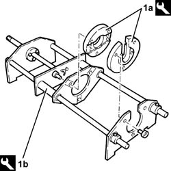
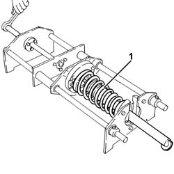
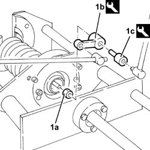
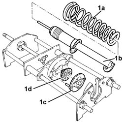
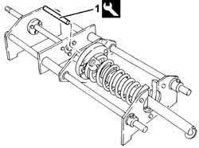
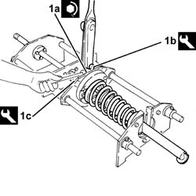

4410A12 front suspension damper (one), lh or rh - for mcpherson strut system - includes dismantling/re-building of assembly at bench r r
- Path
- Procedures > 44 SUSPENSION AND WHEELS > 4410 FRONT SUSPENSION > 4410A front dampers and springs > 4410A12 front suspension damper (one), lh or rh - for mcpherson strut system - includes dismantling/re-building of assembly at bench r r
- Kind
- repair procedure (removal / refitting; the operation number is the code)
- Applies to
- all engines; all production periods
- Interactive page
- https://sloeber94.github.io/elrnDB-a156/en/#/3238178
Applies to: all engines; all production periods
 Removing
Removing
 Refitting
Refitting4410A80 damper lower fork - r r
4450B10 Front WHEEL (one) - R.R.
7055B64 Engine compartment DUST shield in front wheel arch (one), left or right - R.R.
1. Fit the flanges (1a) on the tool (1b).
 | Name | Country |
|---|---|---|
1a | Flanges | 1.870.662.000 |
| Name | Country |
|---|---|---|
1b | Mount | 1.820.089.000 |

Applies to: all engines; all production periods
1. Fit the shock absorber-spring assembly on the support tool and compress it.

Applies to: all engines; all production periods
1. Undo the nut (1a) for the upper shock absorber buffer using tools (1b) and (1c).
| Name | Country |
|---|---|---|
1b | Key | 1.870.663.000 |
| Name | Country |
|---|---|---|
1c | Counter-torque | 1.870.664.000 |

Applies to: all engines; all production periods
1. Loosen the compression tool and remove spring (1a), shock absorber (1b), upper plate (1c), and upper buffer (1d).

Applies to: all engines; all production periods
Refitting
Removing1. Assemble the components of the shock absorber-spring assembly using the tool for centring the shock absorber strut.
| Name | Country |
|---|---|---|
1 | Flanges | 1.870.662.000 |

Applies to: all engines; all production periods
1. Tighten the nut (1a) for the shock absorber upper buffer to the recommended torque using tools (1b) and (1c).
 | Fastening | Component | Ø | Value (daNm) |
|---|---|---|---|---|
1a | Nut | FRONT DAMPER TOP ATTACHMENT | M10 | 3.1 - 3.5 |
| Name | Country |
|---|---|---|
1b | Key | 1.870.663.000 |
| Name | Country |
|---|---|---|
1c | Counter-torque | 1.870.664.000 |

Applies to: all engines; all production periods
Loosen the support tool and remove the shock absorber-spring assembly.
Reposition the tool used for dismantling-reassembling the shock absorber-spring assembly.
7055B64 Engine compartment DUST shield in front wheel arch (one), left or right - R.R.
4450B10 Front WHEEL (one) - R.R.
4410A80 damper lower fork - r r
Check and if necessary check the wheel geometry values 4450A10 front wheel geometry - check using optical equipment - includes front wheel tow-in adjustment if necessary .
Topics linked from this page (5)
- 4410A10 l/h or r/h front suspension spring/damper unit (one) - r+r - check wheel geometry separately if necessary
- 4410A80 damper lower fork - r r
- 4450A10 front wheel geometry - check using optical equipment - includes front wheel tow-in adjustment if necessary
- 4450B10 Front WHEEL (one) - R.R.
- 7055B64 Engine compartment DUST shield in front wheel arch (one), left or right - R.R.
Topics that link to this page (5)
- H20 STEERING WHEEL OSCILLATIONS/ VIBRATIONS / WHILST DRIVING
- S41 NOISE' FRONT / WHILST DRIVING OVER UNMADE ROAD
- Z53 MISFIRE ERROR
- 4410A16 front suspension spring/damper assemblies - r r and check wheel alignment separately if necessary
- 4410A18 Front suspension dampers - for mcpherson strut system - R+R - includes dismantling/re-building of assemblies at bench